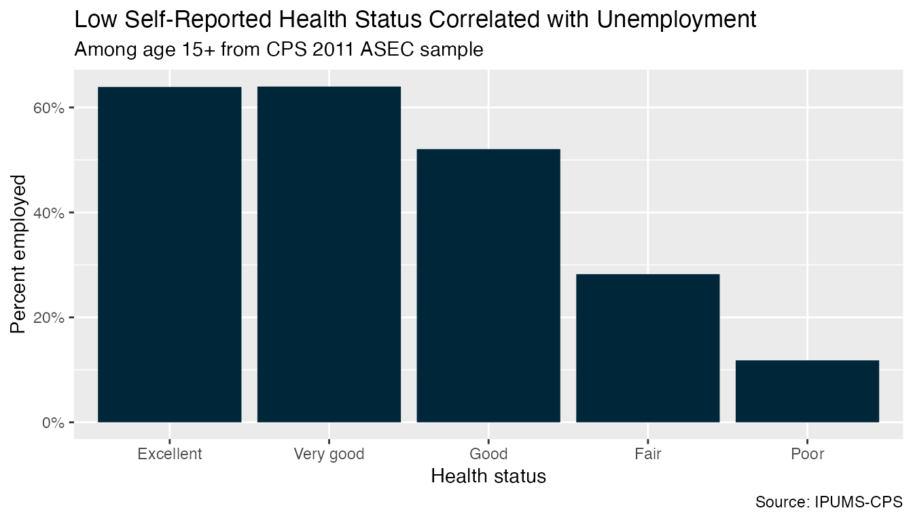
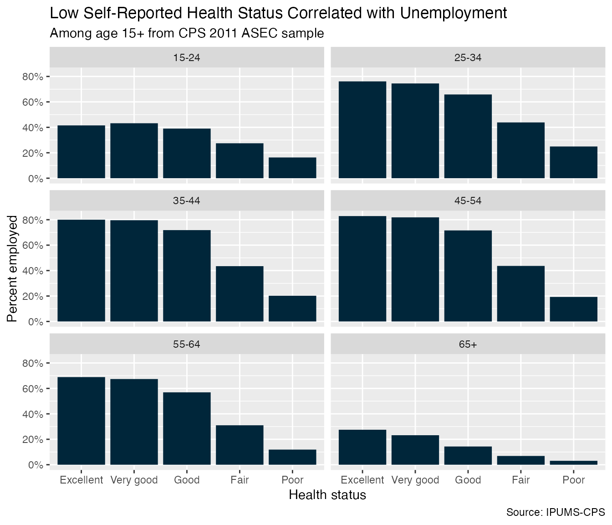

ipumsr Example - CPSvignettes/ipums-cps.Rmd
ipums-cps.RmdOBJECTIVE: Gain an understanding of how the IPUMS dataset is structured and how it can be leveraged to explore your research interests. This exercise will use the IPUMS dataset to explore associations between health and work status and to create basic frequencies of food stamp usage.
This vignette is adapted from the CPS Data Training Exercise available here: https://pop.umn.edu/sites/pop.umn.edu/files/final_review_-_cps_spss_exercise_1_0.pdf
What is the frequency of food stamp recipiency in the US? Are health and work statuses related?
Register with IPUMS - Go to http://cps.ipums.org, click on CPS Registration and apply for access. On login screen, enter email address and password and submit it!
Make an Extract
You will need to change the filepaths noted below to the place where you have saved the extracts.
library(ipumsr)
# Change these filepaths to the filepaths of your downloaded extract
cps_ddi_file <- "cps_00001.xml"
cps_data_file <- "cps_00001.dat"
cps_ddi <- read_ipums_ddi(cps_ddi_file) # Contains metadata, nice to have as separate object
cps_data <- read_ipums_micro(cps_ddi_file, data_file = cps_data_file)
#> Use of data from IPUMS-CPS is subject to conditions including that users should
#> cite the data appropriately. Use command `ipums_conditions()` for more details.Note that the data_file argument is optional if you
didn’t change the data file name and have it saved in your working
directory; read_ipums_micro can use information from the
DDI file to locate the corresponding data file.
These exercises include example code written in the “tidyverse”
style, meaning that they use the dplyr package. This package provides
easy to use functions for data analysis, including
mutate(), select(), arrange(),
slice() and the pipe (%>%). There a
numerous other ways you could solve these answers, including using the
base R, the data.table package and others.
# Can find on the website or from the data
ipums_val_labels(cps_ddi, FOODSTMP)
#> # A tibble: 3 × 2
#> val lbl
#> <dbl> <chr>
#> 1 0 NIU
#> 2 1 No
#> 3 2 Yes
# A: 0 = NIU, 1 = No, 2 = Yes
ipums_website(cps_ddi, "FOODSTMP")
# A: (Only available on website)
# All interviewed households and group quarters.
# Note the NIU on the codes page, this is a household variable and the
# NIU cases are the vacant households.
# We will be working with the FOODSTMP variable a lot, so
# let's turn it into a factor
cps_data <- cps_data %>%
mutate(FOODSTMP_factor = as_factor(FOODSTMP))
cps_data %>%
group_by(FOODSTMP_factor) %>%
summarize(n_foodstmp = sum(WTSUPP)) %>%
mutate(pct_foodstmp = n_foodstmp / sum(n_foodstmp))
#> # A tibble: 2 × 3
#> FOODSTMP_factor n_foodstmp pct_foodstmp
#> <fct> <dbl> <dbl>
#> 1 No 267365863. 0.872
#> 2 Yes 39187348. 0.128
# A: 39,187,348
# A: 12.8% (found in code from previous question)Suppose you were interested not in the number of people living in homes that received food stamps, but in the number of households that were food stamp participants. To get this statistic you would need to use the household weight.
In order to use household weight, you should be careful to select only one person from each household to represent that household’s characteristics. You will need to apply the household weight (HWTSUPP).
cps_data %>%
group_by(SERIAL) %>%
filter(row_number() == 1) %>%
group_by(FOODSTMP_factor) %>%
summarize(n_foodstmp = sum(HWTSUPP)) %>%
mutate(pct_foodstmp = n_foodstmp / sum(n_foodstmp))
#> # A tibble: 2 × 3
#> FOODSTMP_factor n_foodstmp pct_foodstmp
#> <fct> <dbl> <dbl>
#> 1 No 107139102. 0.893
#> 2 Yes 12855283. 0.107
# A: 12,855,283
# A: 10.7% (found in code from previous question)
ipums_website(cps_ddi, "EMPSTAT")
# A: Age 15+
ipums_val_labels(cps_ddi, HEALTH)
#> # A tibble: 5 × 2
#> val lbl
#> <dbl> <chr>
#> 1 1 Excellent
#> 2 2 Very good
#> 3 3 Good
#> 4 4 Fair
#> 5 5 Poor
# A: 1 = Excellent, 2 = Very Good, 3 = Good, 4 = Fair, 5 = Poor
cps_data %>%
filter(HEALTH == 5) %>%
summarize(emp_pct = weighted.mean(EMPSTAT == 10, WTSUPP))
#> # A tibble: 1 × 1
#> emp_pct
#> <dbl>
#> 1 0.116
# A: 11.6%
cps_data %>%
filter(HEALTH == 2) %>%
summarize(emp_pct = weighted.mean(EMPSTAT == 10, WTSUPP))
#> # A tibble: 1 × 1
#> emp_pct
#> <dbl>
#> 1 0.516
# A: 51.6%
ipums_val_labels(cps_ddi, EMPSTAT)
#> # A tibble: 14 × 2
#> val lbl
#> <dbl> <chr>
#> 1 0 NIU
#> 2 1 Armed Forces
#> 3 10 At work
#> 4 12 Has job, not at work last week
#> 5 20 Unemployed
#> 6 21 Unemployed, experienced worker
#> 7 22 Unemployed, new worker
#> 8 30 Not in labor force
#> 9 31 NILF, housework
#> 10 32 NILF, unable to work
#> 11 33 NILF, school
#> 12 34 NILF, other
#> 13 35 NILF, unpaid, lt 15 hours
#> 14 36 NILF, retired
# 10 is the code for "At work"
pct_emp_by_health <- cps_data %>%
filter(AGE >= 15) %>%
mutate(HEALTH_factor = as_factor(HEALTH)) %>%
group_by(HEALTH_factor) %>%
summarize(emp_pct = weighted.mean(EMPSTAT == 10, WTSUPP))
pct_emp_by_health
#> # A tibble: 5 × 2
#> HEALTH_factor emp_pct
#> <fct> <dbl>
#> 1 Excellent 0.639
#> 2 Very good 0.640
#> 3 Good 0.521
#> 4 Fair 0.282
#> 5 Poor 0.118
# A: 11.8%
# A: 64.0% (found in code from previous question)
ipums_website(cps_ddi, "AHRSWORK")
# A: Civilians age 15+, at work last week
avg_hrs_by_health <- cps_data %>%
filter(AGE >= 15 & AHRSWORKT < 999) %>%
mutate(HEALTH_factor = as_factor(HEALTH)) %>%
group_by(HEALTH_factor) %>%
summarize(mean_hours_worked = weighted.mean(AHRSWORKT, WTSUPP))
avg_hrs_by_health
#> # A tibble: 5 × 2
#> HEALTH_factor mean_hours_worked
#> <fct> <dbl>
#> 1 Excellent 38.4
#> 2 Very good 38.7
#> 3 Good 37.8
#> 4 Fair 35.7
#> 5 Poor 32.4
# A: Excellent 38.4
# Very good 38.7
# Good 37.8
# Fair 35.7
# Poor 32.4ipumsr package metadata functions (like
ipums_var_label() and ipums_file_info()) and
ggplot2 to make a graph of the relationship between HEALTH
and percent employed (from Part III above).
library(ggplot2)
x_label <- ipums_var_label(cps_data, HEALTH)
source_info <- ipums_file_info(cps_ddi, "ipums_project")
ggplot(pct_emp_by_health, aes(x = HEALTH_factor, y = emp_pct)) +
geom_bar(stat = "identity", fill = "#00263a") +
scale_x_discrete(x_label) +
scale_y_continuous("Percent employed", labels = scales::percent) +
labs(
title = "Low Self-Reported Health Status Correlated with Unemployment",
subtitle = "Among age 15+ from CPS 2011 ASEC sample",
caption = paste0("Source: ", source_info)
)
# Age is likely correlated with self-reported health and employment, so a good
# analysis would control for this.
# One way to do so graphically is to make faceted plots by age group
pct_emp_by_health_age <- cps_data %>%
filter(AGE >= 15) %>%
mutate(
AGE_factor = cut(
AGE,
c(15, 25, 35, 45, 55, 65, max(AGE)),
c("15-24", "25-34", "35-44", "45-54", "55-64", "65+"),
include.lowest = TRUE
),
HEALTH_factor = as_factor(HEALTH)
) %>%
group_by(HEALTH_factor, AGE_factor) %>%
summarize(emp_pct = weighted.mean(EMPSTAT == 10, WTSUPP), .groups = "drop")
x_label <- ipums_var_label(cps_data, HEALTH)
source_info <- ipums_file_info(cps_ddi, "ipums_project")
ggplot(pct_emp_by_health_age, aes(x = HEALTH_factor, y = emp_pct)) +
geom_bar(stat = "identity", fill = "#00263a") +
scale_x_discrete(x_label) +
scale_y_continuous("Percent employed", labels = scales::percent) +
facet_wrap(~AGE_factor, ncol = 2) +
labs(
title = "Low Self-Reported Health Status Correlated with Unemployment",
subtitle = "Among age 15+ from CPS 2011 ASEC sample",
caption = paste0("Source: ", source_info)
)